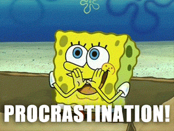

Week 2 w.c. 18/09/23
This the week 2 PowerPoint we used in this week's lessons.
We went through the referencing guide - this will be used for all subjects on Access.
We talked through the Student Handbook and discussed the implications of submitting work.
Grading is an important aspect of the course as all subjects (apart from Study Skills) are graded at Pass, Merit or Distinction. We went through the grading quiz. These are the answers.
Comma splicing is the grammatical error of joining two separate clauses with a comma.
Examples - and ways to correct comma splicing - are shown on the PowerPoint. You completed this exercise to help you avoid comma splicing.
In class, we started on Task 1 of our first assignment in Study Skills: Preparation for Higher Education. Task 1 is on page 6 of the assignment brief.
Your homework is to complete the grid (word processed, not hand written) on a downloaded copy of the assignment brief.
This is a example of the level of detail required for each of your FIVE choices.
Even though you are not applying through UCAS for five choices, for the purposes of this assignment, you need to research your chosen course at five different universities.
1. Why plan?
Purpose of planning
Why do your tutors keep talking about planning your writing? Planning lets you organise your thoughts as well as highlighting where you have gaps in your knowledge: 'What do I have to do?'. This then leads on to your research for the task, such as 'What do I need to find out?'.
Planning also gives you the chance to think about your essay structure; paragraphing and content. In an ideal world, planning can take longer than writing the report or essay itself. If you can plan effectively, the writing up of your ideas will be less time-consuming.
Method words are the indicator to help with focusing your work; they tell you partly what you have to do, e.g. Critically evaluate or discuss.
Try to avoid... 
Styles of planning
There is no 'right' way to plan an essay; it can be whatever works for you. Some people like mind maps, lists, notes or even Post-it notes. Below there are some examples of different styles.
Here's a guide to a "5-minute plan". Give it a go!
Examples
Mind map example
Linear Structure/Sections
Persuasive
Paragraphing